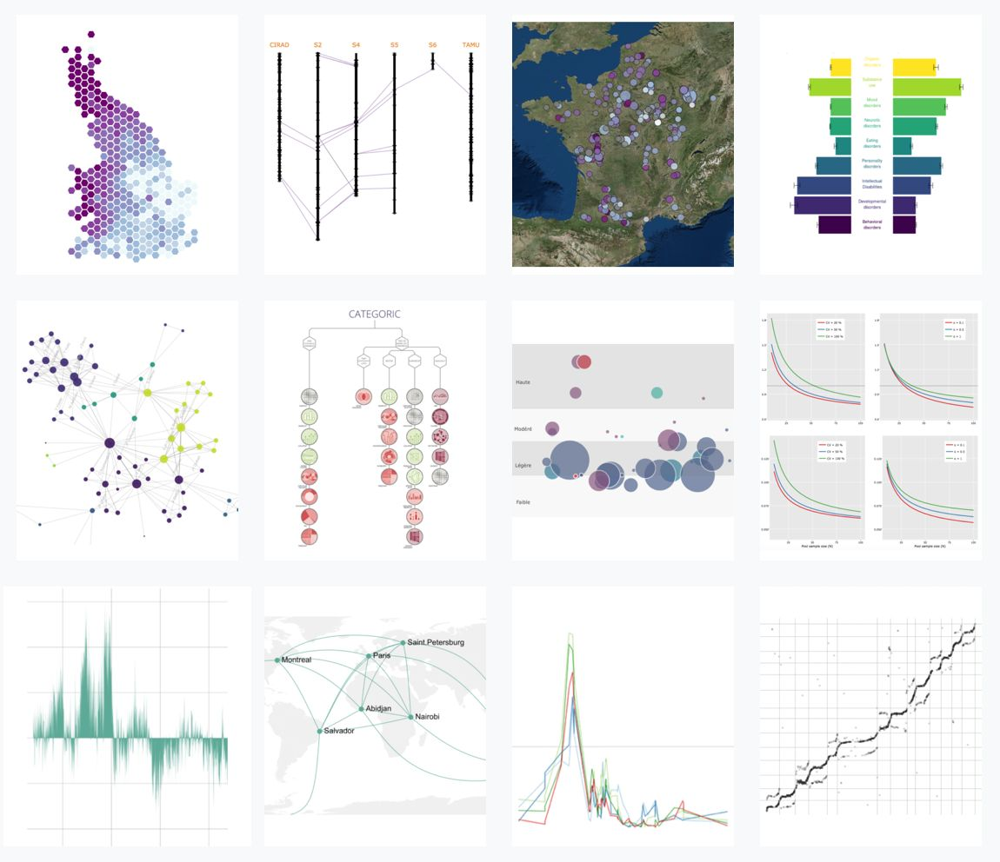

Proposal for DC PCSB’s ASPIRE Reporting Project
Submitted by:
Yan Holtz – Data Visualization Specialist
Dr. Théophile Mouton – Consultant & Developer
1. Introduction
We are pleased to submit this proposal for the development of public-facing, web-based ASPIRE outcome reports for DC Public Charter School Board (DC PCSB). Our team brings extensive experience in creating dynamic, accessible, and responsive data visualization solutions. We will deliver high-quality HTML-based reports using Quarto, Python, SQL, and GitLab to meet and exceed DC PCSB’s needs.
Visit our portfolios:
- Yan Holtz
- Dr. Théophile Mouton

2. Understanding of the Project
We understand DC PCSB requires two distinct types of ASPIRE outcome reports for each public charter school campus:
- Type 1 Reports: Educate the public about the ASPIRE system and display Measure Rates by student subgroup.
- Type 2 Reports: Include Type 1 content along with Measure Scores, Floors, and Targets.
Additional Requirements:
- Reports will be generated using Quarto, Python, and SQL scripts hosted on GitLab.
- Must be mobile-friendly, ADA-compliant, and use progressive disclosure to present information.
- Data provided by DC PCSB will be in publication-ready tables from AWS Data Warehouse.
- Reports will dynamically handle variability across schools and frameworks, including scenarios with missing or suppressed data.
Our team is well-equipped to meet these technical and functional requirements while adhering to DC PCSB’s standards for accessibility, maintainability, and user-centered design.
3. Approach
3.1 Project Management
An experienced Product Manager (Yan Holtz) will oversee all aspects of the project, including:
- Serving as the primary point of contact for DC PCSB.
- Conducting sprint planning, managing feedback loops, and ensuring timely delivery.
- Overseeing quality assurance (QA) for data accuracy, functionality, and visual design.
3.2 Development Process
We propose the following phased approach to deliver the reports:
Phase 1: Planning and Design (Weeks 1–3)
- Collaborate with DC PCSB to finalize report templates for the 12 ASPIRE frameworks.
- Create a cohesive design system using CSS/YAML to ensure consistent aesthetics.
- Ensure compliance with ADA accessibility guidelines, including color contrast and alternative text.
Phase 2: Development (Weeks 4–12)
- Build Quarto scripts integrated with Python and SQL to generate HTML reports.
- Implement progressive disclosure features, such as collapsible sections and dynamic text, to reduce cognitive load.
- Develop mobile-responsive layouts to ensure accessibility on all devices.
Phase 3: Quality Assurance (Weeks 13–14)
- Conduct thorough testing for:
- Data Integrity: Ensure accurate representation of provided data.
- Functionality: Validate interactive features (e.g., collapsible sections).
- Visual Design: Ensure the design meets DC PCSB’s branding and ADA standards.
- Mobile Usability: Verify seamless use on both desktop and mobile devices.
Phase 4: Delivery and Handover (Week 15)
- Deliver Type 1 reports first, followed by Type 2 reports.
- Provide comprehensive documentation, including a detailed README for GitLab.
- Conduct user training sessions if needed.
3.3 Technical Implementation
Our technical approach includes:
- Framework-Specific Templates:
- Design customized Quarto templates for the 12 ASPIRE frameworks to accommodate varying categories, measures, and subgroups.
- Hierarchical Navigation:
- Use progressive disclosure to organize data intuitively into categories, measures, and subgroups.
- Dynamic Customization:
- Dynamically generate measures, descriptions, and visualizations for school-determined measures.
- School-Framework Interface:
- Create an interface allowing users to select schools and frameworks, ensuring seamless navigation between multiple frameworks.
4. Key Features
- Responsive Design: Reports will adapt seamlessly to desktop and mobile devices.
- Progressive Disclosure: Users can expand/collapse sections to view more granular data (e.g., bar charts, measure floors/targets).
- Dynamic Text and Charting: Dynamic data integration into text strings and charts to provide user-specific insights.
- ADA Compliance: Reports will meet WCAG 2.1 AA standards, focusing on accessibility for all users.
- Maintainability: Code and documentation will be structured for easy updates by DC PCSB’s Data Team.
5. Timeline
5. Timeline
| Iteration | Deliverable | Estimated Hours | Timeline |
|---|---|---|---|
| Iteration 1 | Very rough draft | 70 hours | Week 1–2 |
| Iteration 2 | Very rough draft | 70 hours | Week 3–4 |
| Iteration 3 | Rough draft | 70 hours | Week 5–6 |
| Iteration 4 | Rough draft | 70 hours | Week 7–8 |
| Iteration 5 | Presentation-ready draft | 70 hours | Week 9–10 |
| Iteration 6 | Incorporate feedback | 70 hours | Week 11–12 |
| Iteration 7 | Final draft with incorporated feedback | 70 hours | Week 13–14 |
Total Hours: 490
Total Timeline: 14 weeks
6. Budget
Total Cost: $29,400
This includes all phases of development, quality assurance, and documentation. A detailed breakdown is provided in a separate cost proposal, as requested.
7. Why Choose Us?
- Proven Expertise: Extensive experience delivering data-driven reporting projects.
- Focus on Accessibility: Commitment to ADA compliance to ensure equitable access for all users.
- Iterative Development: Feedback incorporated into iterative updates to meet user expectations.
- Commitment to Quality: Robust QA ensures a polished and reliable final product.
- Maintainability: Well-documented and scalable solutions for long-term usability.
8. Contact
Yan Holtz
yan-holtz.com
yan.holtz.data@gmail.com
We look forward to collaborating with DC PCSB to create impactful and user-friendly ASPIRE reports.
Sincerely,
Yan Holtz & Dr. Théophile Mouton
Dataviz Universe